제가 일을 바라보는 방식
자동차 임베디드 실무에서 모터 제어, 바디 제어기, AUTOSAR 자동화처럼 작은 판단 차이가 실제 동작과 검증 결과로 이어지는 일을 해왔습니다. 개인 프로젝트에서는 그 경험을 바탕으로 놓치기 쉬운 상태, 반복해서 확인해야 하는 정보, 혼자 보기 어려운 흐름을 화면과 기록으로 정리했습니다.
Profile archive
동아전기부품: 냉매 밸브 액추에이터와 PMSM 모터 제어
LS Automotive: SCM·PSU·통합제어기 선행
MOBASE ASEC: AUTOSAR 코드 생성
WSL/GCC 검증 자동화
개인 프로젝트: 실무 경험 기반 도구화
반복 확인 문제를 화면과 기록으로 정리
01
소개
자동차 임베디드 실무에서 모터 제어, 바디 제어기, AUTOSAR 자동화처럼 작은 판단 차이가 실제 동작과 검증 결과로 이어지는 일을 해왔습니다. 개인 프로젝트에서는 그 경험을 바탕으로 놓치기 쉬운 상태, 반복해서 확인해야 하는 정보, 혼자 보기 어려운 흐름을 화면과 기록으로 정리했습니다.
상태가 흩어진 작업을 입력, 판단, 실행, 기록 흐름으로 나눕니다.
화면에서 확인되는 결과와 다시 추적 가능한 로그를 남깁니다.
원격 작업 관리, 매물 추적, 조건 검토, MCU 학습처럼 실제로 써볼 도구를 만들었습니다.
02
실무 경험
히트펌프 냉매 유로가 목표 위치까지 열리고 닫히도록 모터 구동 시퀀스와 위치 판단 로직을 구현·검증했습니다. PMSM 모터의 회전이 기어와 액추에이터를 거쳐 실제 유로 개폐로 이어지는 구조였고, 센서형 히트펌프 액추에이터와 센서리스 PT 액추에이터의 위치 판단, STALL 감지, 재동작 흐름을 다뤘습니다.
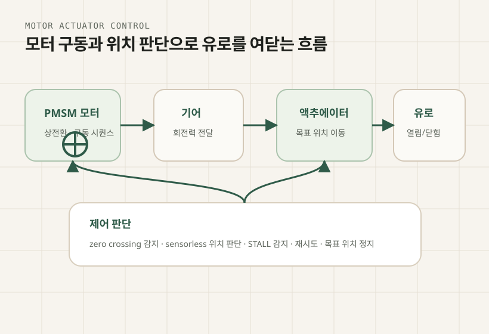
MATLAB/Simulink와 AUTOSAR 설계 환경을 활용해 조향 컬럼 모듈, 파워 시트 유닛, 통합제어기 선행 과제를 다뤘습니다. 운전자 입력이 DC 모터 드라이버, CAN/LIN 통신, 진단 조건, 기능안전 산출물로 이어지는 흐름을 정리하고, 실제 단품 동작과 시뮬레이션 환경의 task 순서·주기를 맞춰 검증했습니다.
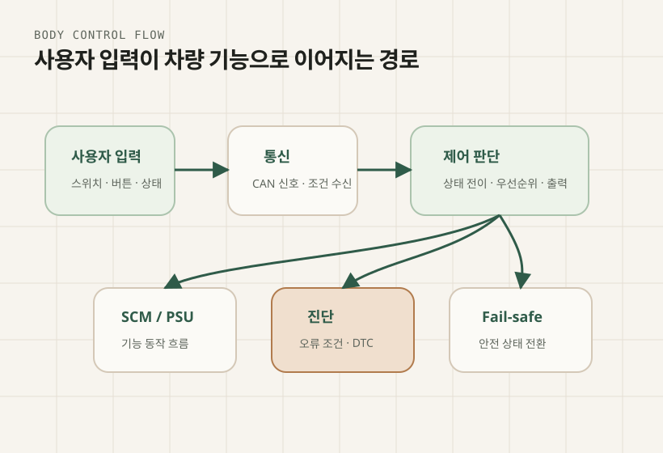
AUTOSAR 구조에서 반복되는 설정 확인과 코드 생성 입력을 자동화하는 방향으로 작업했습니다. ARXML을 분석해 일관성 있는 C 코드 생성 입력으로 변환하고, 생성 결과를 WSL/GCC 환경에서 단위 검증할 수 있도록 파이프라인을 구성해 사람이 옮기던 설정 누락과 반복 검증 부담을 줄이는 데 초점을 맞췄습니다.
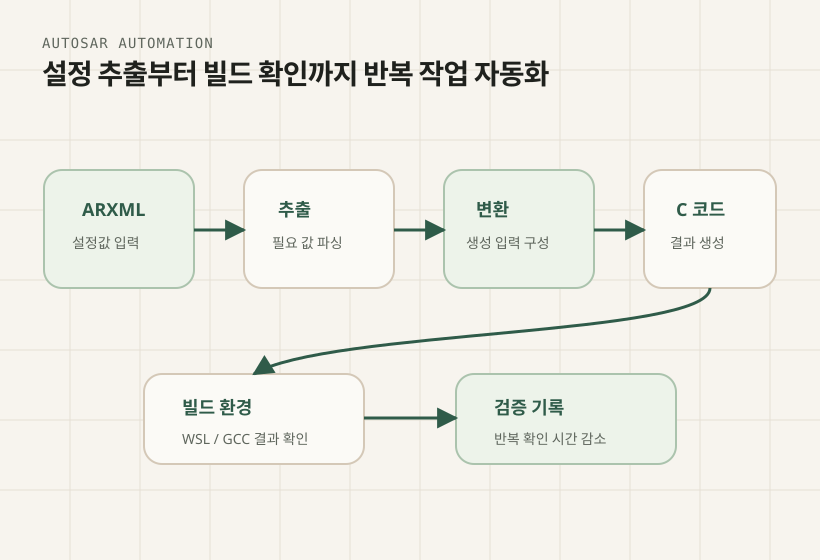
03
개인 프로젝트
밖에서도 작업 상태를 확인하는 도구
로컬 PC 앞에 없어도 Discord에 승인된 작업 요청을 남기고, 진행 상황과 결과를 메시지로 확인할 수 있게 만든 도구입니다. 채널별 작업공간 연결, 작업 큐, 세션 상태 저장, 로그 회신, 중지/재시작 흐름을 한곳에 묶어 원격에서도 작업이 멈췄는지, 답변이 필요한지, 완료됐는지 놓치지 않도록 했습니다.
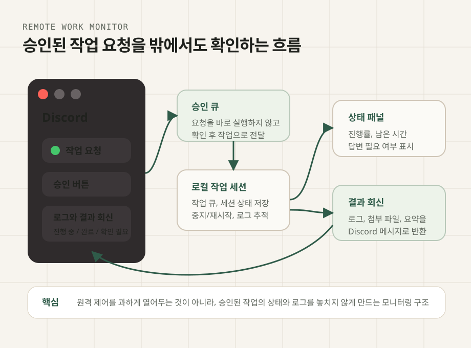
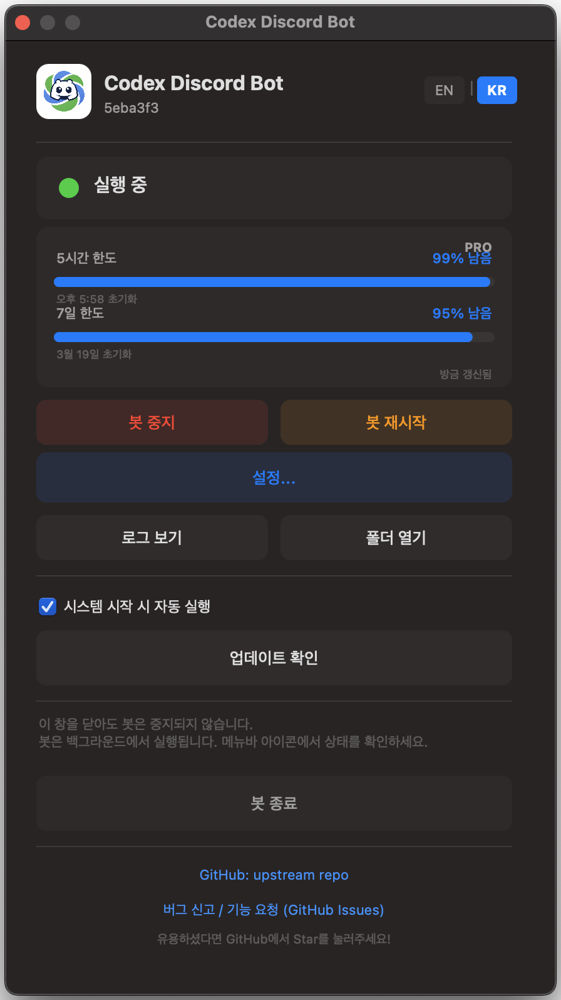

AI에게 일을 나누어 맡기는 작업 구조
하나의 AI 세션에 모든 일을 맡기지 않고, 조사·구현·검증·리뷰를 역할별로 나누기 위한 작업 환경입니다. 각 세션의 중간 결과와 결정 이력을 한곳에 모아 비교하고, 충돌이나 빠진 부분을 다시 확인할 수 있도록 구성했습니다. 요청을 작업 단위로 쪼개고, 에이전트별 결과를 다시 합치는 흐름을 실험했습니다.
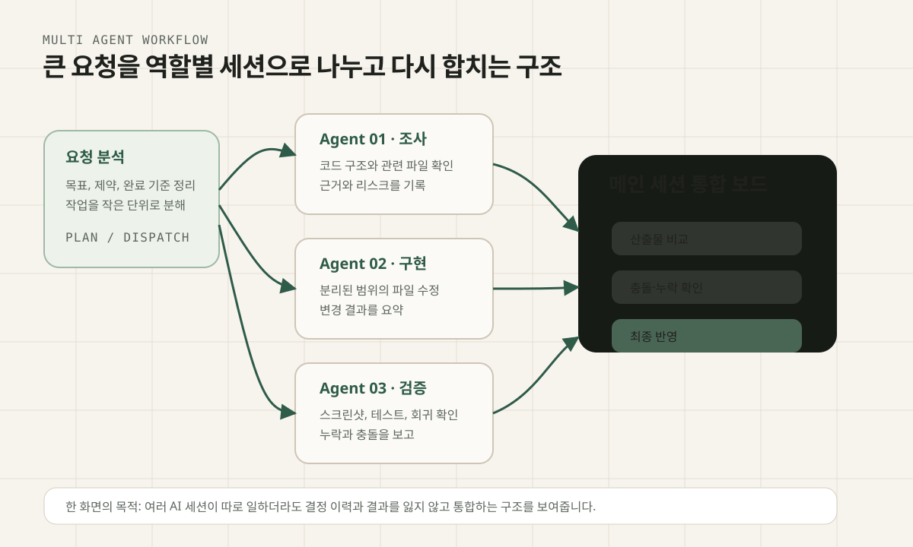
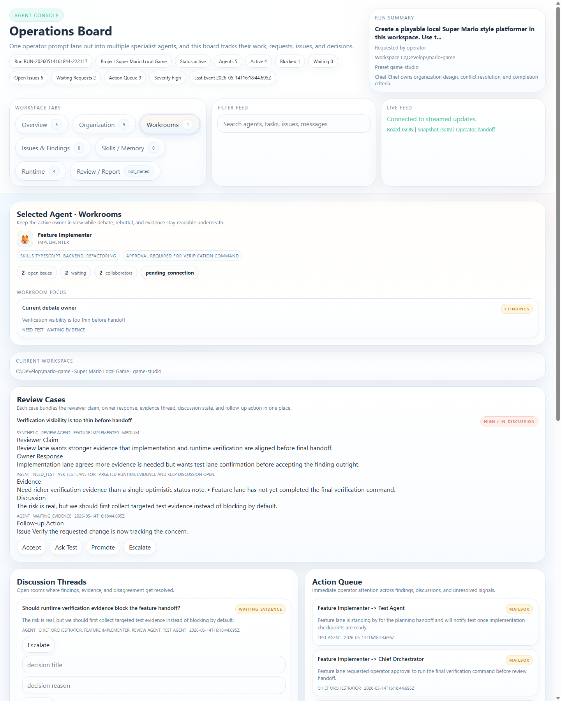
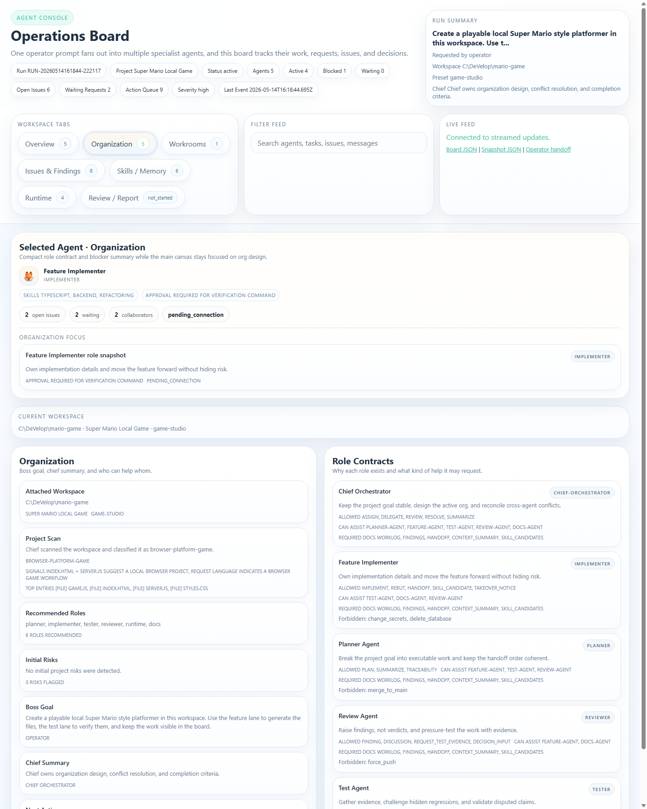
중고거래 매물 추적
중고나라, 번개장터처럼 여러 사이트에 흩어진 관심 매물을 모아 가격, 등록 시점, 상태, 확인 포인트를 비교하는 도구입니다. 허용된 범위의 검색 결과를 수집하고, 병합, 스케줄링, 알림 흐름을 나누어 기준가 대비 편차·중복 제거·주의 신호·확인 우선순위를 계산했습니다. 자동 구매가 아니라 관심 후보를 빠르게 비교하는 화면으로 정리했습니다.
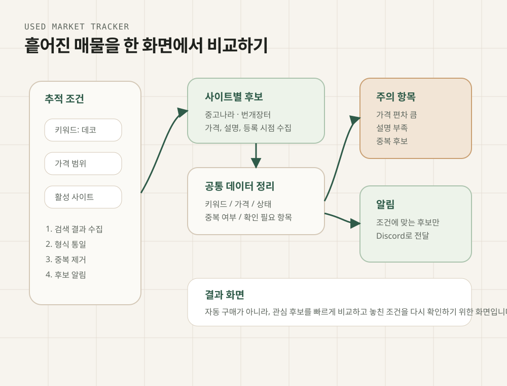

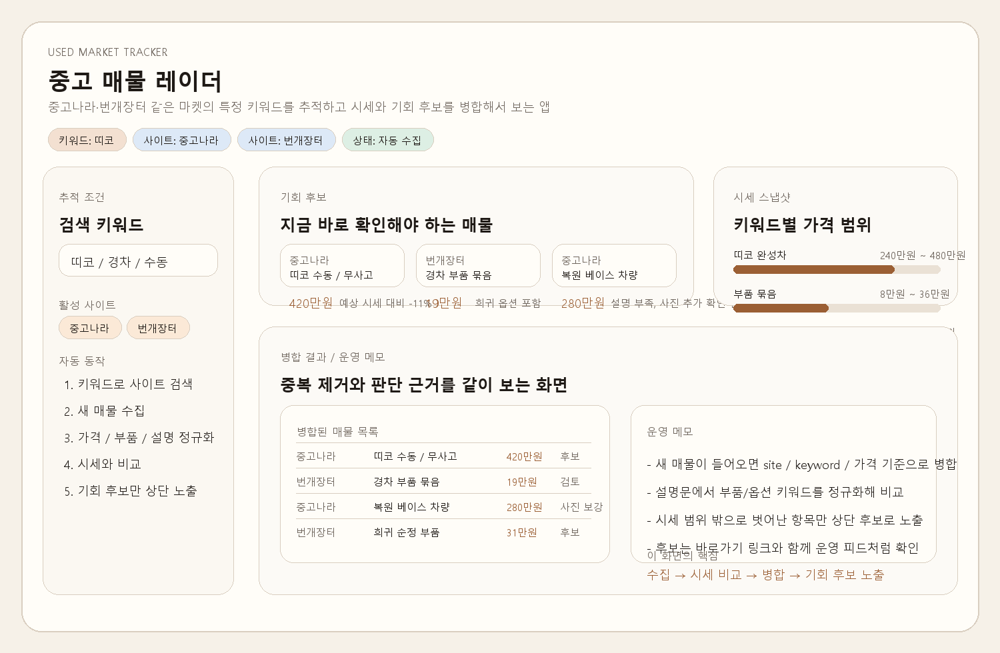
주식 조건 검토 도구
관심 종목, 차트 조건, 보유 상태, 주문 이력, 실행 전 체크 항목을 나누어 보여주는 개인용 검토 도구입니다. 매매를 대신 판단하는 화면이 아니라, 어떤 조건을 보고 어떤 상태에서 실행했는지 기록을 남기기 위해 구성했습니다. 실행 전에는 데이터 최신성, 매수 가능 시간, 손실 한도, 보유·미체결 주문 같은 안전 확인 단계를 분리했습니다.
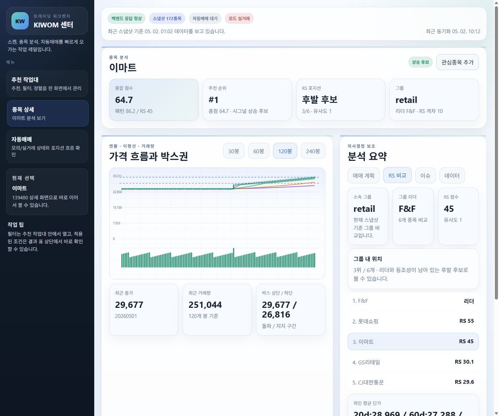
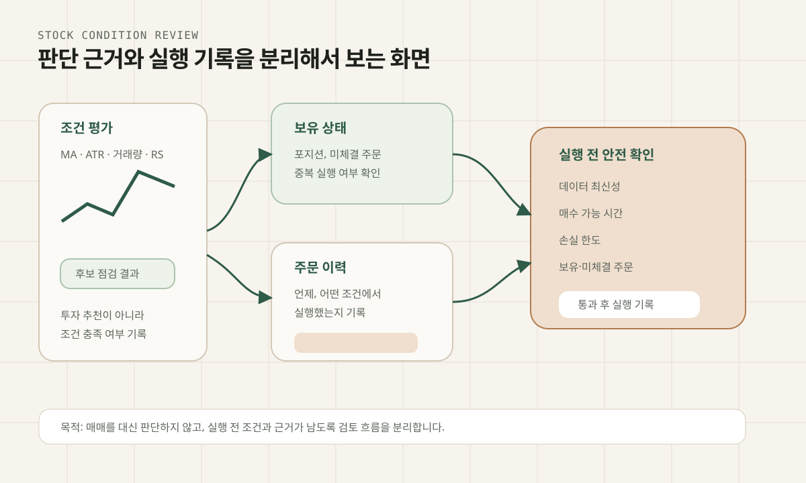
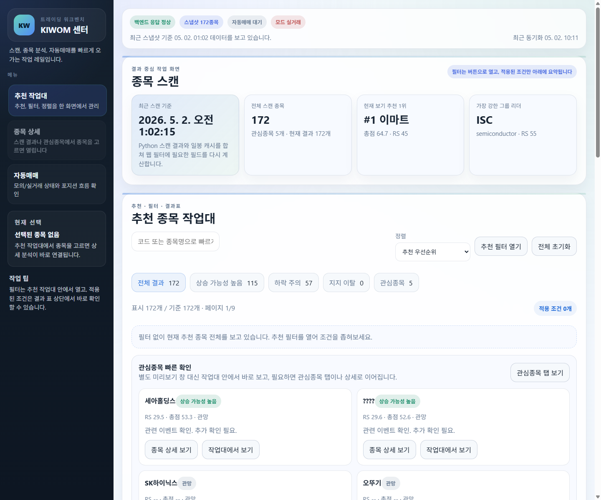

장비 없이 흐름을 확인하는 MCU 학습 도구
브라우저에서 코드를 입력하고 실행하면 가상 보드, 레지스터 상태, 입력값, 주변장치 신호 흐름을 함께 확인할 수 있는 학습용 시뮬레이터입니다. Monaco 코드 편집기와 Web Worker 실행 환경을 분리하고, GPIO/ADC/PWM/UART/EXTI 레지스터 맵, 홀 센서 인터럽트와 모터 상태 변화를 tick 단위로 관찰할 수 있게 구성했습니다.
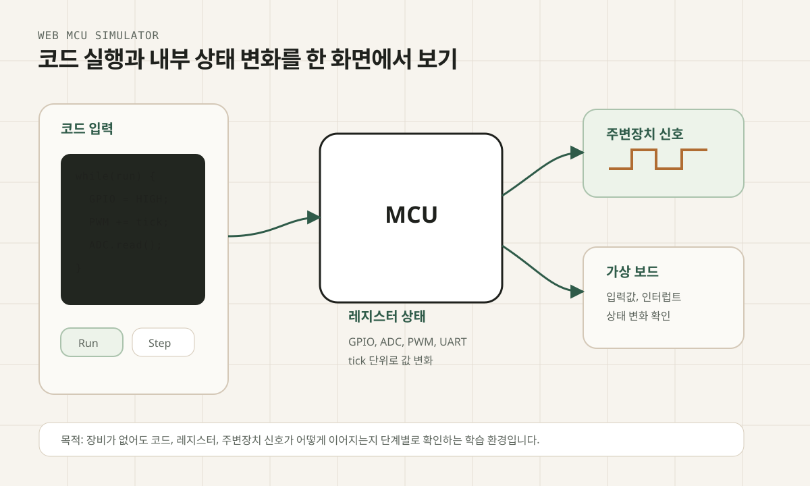
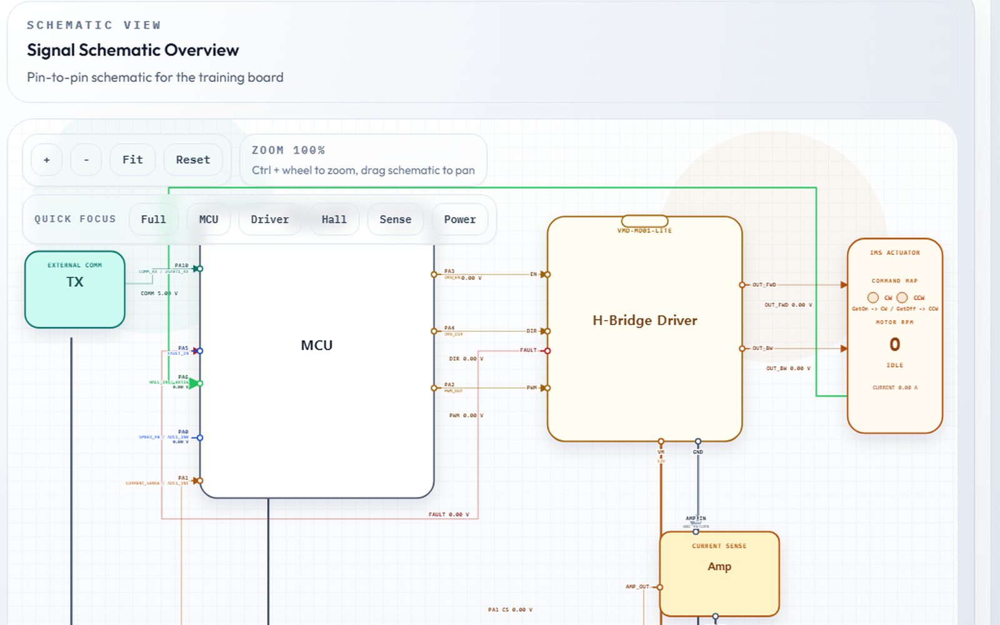